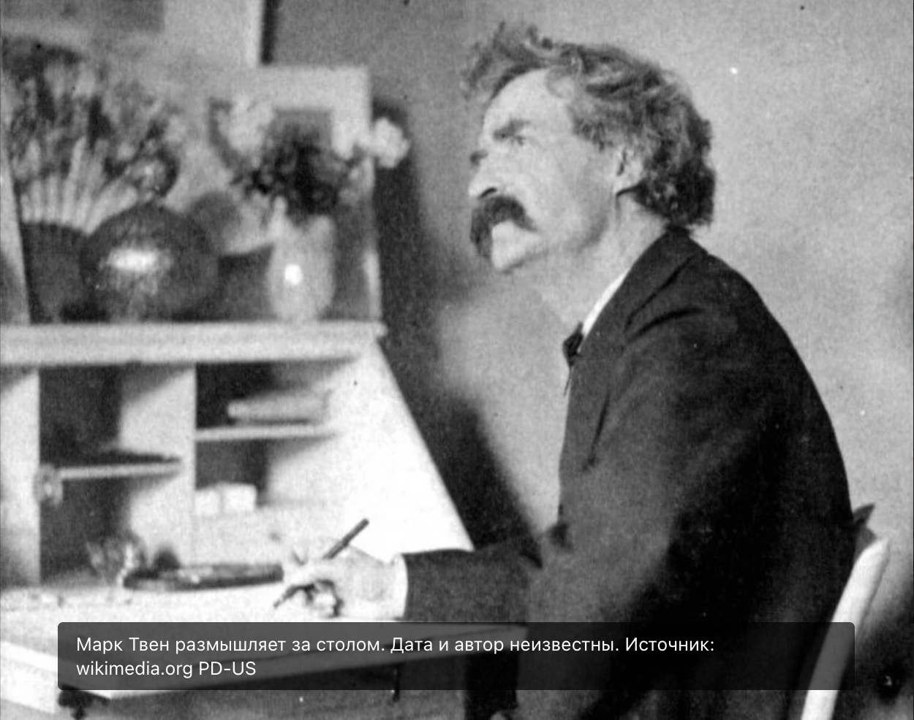

3 малоизвестных факта из жизни Марка Твена
Марк Твен – один из величайших писателей прошлого века, целевой аудиторией которого изначально были взрослые.

Он был и «отцом американской литературы», и грозным бунтарем, чьи высказывания были одновременно колкими, мудрыми и пророческими. Он не стеснялся выражать свое мнение, умело разоблачая самые большие несправедливости мира: лицемерие, расизм, рабство и жестокое обращение с животными.
Мы собрали лишь некоторые факты его яркой биографии.
1. Псевдонимы
Наверняка вам известно, что Марк Твен – всего лишь литературный псевдоним, а настоящее имя писателя Сэмюэл Лангхорн Клеменс. Термин «mark twain» означает, что плавание безопасно, так как глубина воды составляет две сажени или 12 футов.

Однако это был не единственный его псевдоним. В разные годы он использовал и другие литературные имена: Томас Джефферсон Снодграсс, У. Эпаминондс Адрастус Блаб, Сержант Фатом и Рамблер.
2. Твен родился недоношенным
Марк Твен родился в 1835 году на 2 месяца раньше срока. Процент выживания недоношенных детей в 19 веке был крайне низок, потому даже его мать не надеялась, что мальчик переживет младенчество. Примерно до 7лет здоровье будущего писателя было хрупким.

Марк Твен был шестым ребенком в семье, однако дожить до взрослого возраста удалось только троим.
3. Твен так и не окончил школу
Когда Сэмюэлу было 11 лет, неожиданно от пневмонии скончался его отец. Тогда мальчик был вынужден бросить учебу в школе, чтобы начать зарабатывать.

Отсутствие фактического образования не помешало получить ему общественное признание. Твен получил титул магистра искусств и ученую степень доктора литературы Оксфордского университета.
Источник